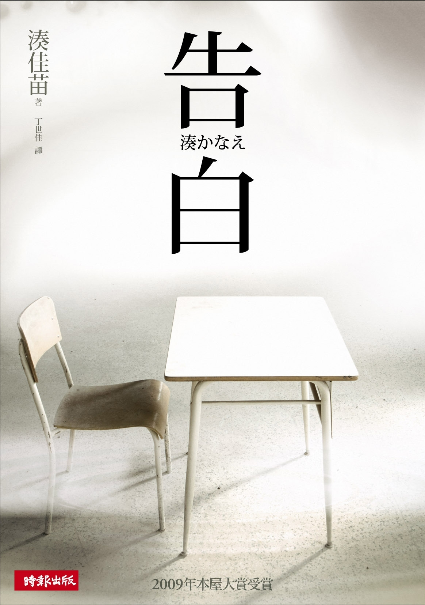

📖日本推理小说家凑佳苗的成名作，以独特的"告白"体叙事结构震撼文坛。女教师森口悠子的女儿在泳池中溺亡，警方判定为意外，但她知道真相——是班上两个学生所为。
故事以多个角色的第一人称告白展开，层层剥开真相，同时深入探讨复仇、少年犯罪、人性善恶等议题。
这是我读过的最令人不寒而栗的推理小说之一。它的恐怖不在于血腥，而在于对人性的深入挖掘。
多人视角的叙事结构非常精妙。每个角色的"告白"都在揭示新的信息，同时也在为自己的行为辩护。读者被迫不断修正对事件的认知，最终拼凑出一个令人窒息的真相。没有谁是纯粹的恶人，但每个人都在推动悲剧的发生。
书中的复仇主题引发了深刻的伦理思考。森口老师的复仇不是法律意义上的惩罚，而是对凶手内心的摧毁。这种"精神处决"比肉体惩罚更残忍，也更令人不安。当法律无法制裁未成年人犯罪时，私刑是否正当？复仇能带来正义吗？
这本书不只是推理小说，更是对人性阴暗面的深刻剖析。读完之后，会在很长一段时间里挥之不去。它是那种让你想立刻推荐给朋友，但又怕他们承受不住的书。